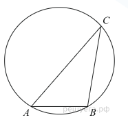

Математика
Постараюсь покороче. Все для вашего удобства ;)
<Вброс от автора> Все это желательно выучить. Или нет. Дело ваше. Тяжело в учении - легко в поступлении (отчислении) ( ͡° ͜ʖ ͡°) <Вброс от автора>
Задание № 1. Текстовые задачи (lvl.1)
Задачи из этого номера подразделяются на некоторые категории, но все они двольно просты и похожи друг на друга.
Для их решения вам необходимы:
- Знания арифметических действий;
- Базовые умения работы с числами;
- Немного логики.
Рассмотрим на примерах:
Цена на электрический чайник была повышена на 23% и составила 2337 рублей. Сколько рублей стоил чайник до повышения цены?
Решение:
Для решения необходимо составить пропорцию. Главное правило: рубли - под рублями, проценты - под процентами.
Ответ: 1900 рублей (помните, что никаких слов в ответе быть не должно, только число)
Едем дальше:
В среднем за день во время конференции расходуется 70 пакетиков чая. Конференция длится 6 дней. В пачке чая 50 пакетиков. Какого наименьшего количества пачек чая хватит на все дни конференции?
Решение:
Тоже все довольно просто
Ответ: 9
Не вижу смысла, чтобы долго останавливаться на этом задании. Уверен, что с этим заданием вы легко справитесь. Я в вас верю !
-_--_--_--_--_--_--_--_--_--_--_--_--_--_--_--_--_--_--_--_--_--_--_--_--_--_--_--_--_-
Задание № 2. Графики и диаграммы
Тип задания говорит сам за себя. Все, что вам нужно для получения заветного балла, это:
- Умение понимать график;
- Это все. Чтобы не получить тут балла, нужно постараться.
Какие же задания тут можно встретить:
На рисунке показано изменение температуры воздуха на протяжении трех суток. По горизонтали указывается дата и время суток, по вертикали — значение температуры в градусах Цельсия. Определите по рисунку наибольшую температуру воздуха 22 января. Ответ дайте в градусах Цельсия.
Смотрим на график - говорим ответ
Ответ: -10
На диаграмме показано количество посетителей сайта РИА Новости во все дни с 10 по 29 ноября 2009 года. По горизонтали указываются дни месяца, по вертикали — количество посетителей сайта за данный день. Определите по диаграмме, какого числа количество посетителей сайта РИА Новости было наименьшим за указанный период.
Аналогично предыдущему
Ответ: 15
На графике изображена зависимость крутящего момента двигателя от числа его оборотов в минуту. На оси абсцисс откладывается число оборотов в минуту, на оси ординат — крутящий момент в Н · м. Скорость автомобиля (в км/ч) приближенно выражается формулой v = 0,036n, где n — число оборотов двигателя в минуту. С какой наименьшей скоростью должен двигаться автомобиль, чтобы крутящий момент был не меньше 120 Н · м? Ответ дайте в километрах в час.
Чуть-чуть сложнее, но тоже нетрудно.
Решение:
Для выполнения поставленного в задаче условия нужно, чтобы обороты двигателя были не меньше 2000 и не больше 5000. Т.к. скорость нужна минимальная, то и значение оборотов мы берем минимальное:
Ответ: 72
Ну что же. Идем дальше
-_--_--_--_--_--_--_--_--_--_--_--_--_--_--_--_--_--_--_--_--_--_--_--_--_--_--_--_--_-
Задание № 3. Координатная плоскость
В основном задачи из этого номера простые, НО...
Что нужно знать:
Примеры заданий:
На клетчатой бумаге с размером клетки 1 x 1 изображён угол. Найдите тангенс этого угла.
Решение:
Проведем отрезок AB и получим треугольник OBA. Теперь проведем высоту BK к основанию OA. По рисунку видно, что OK = BK, а это значит, что искомый тангенс равен 1.
Ответ: 1
Найдите площадь треугольника, изображенного на клетчатой бумаге с размером клетки 1 см x 1 см (см. рис.). Ответ дайте в квадратных сантиметрах.
Решение:
Площадь этого треугольника есть разность площади большого квадрата (внутри которого расположен треугольник) и суммы площадей других фигур внутри этого квадрата.
Ответ: 12
На клетчатой бумаге изображены два круга. Площадь внутреннего круга равна 1. Найдите площадь заштрихованной фигуры.
Решение:
Площадь большого круга равна 36п, а малого - 9п или же 1. Распишем 36п как 9п*4 => 36п = 4. Площадь заштрихованной фигуры равна разности этих площадей, т.е. 3.
Ответ: 3
-_--_--_--_--_--_--_--_--_--_--_--_--_--_--_--_--_--_--_--_--_--_--_--_--_--_--_--_--_-
Задание № 4. Теория вероятности
В этом номере могут попасться как очень легкие, так и довольно запутанные задания. Здесь важно понять сам принцип.
Что необходимо знать:
- Формулу для нахождения вероятности;
- Алгоритм решения более трудных задач на вероятность.
Сами задания:
На тарелке 16 пирожков: 7 с рыбой, 5 с вареньем и 4 с вишней. Юля наугад выбирает один пирожок. Найдите вероятность того, что он окажется с вишней.
Решение:
Формула для нахождения вероятности довольно проста: p = число благоприятных событий / число всех событий.
p = 4 / 16 = 0,25
Ответ: 0,25
Агрофирма закупает куриные яйца в двух домашних хозяйствах. 40% яиц из первого хозяйства — яйца высшей категории, а из второго хозяйства — 20% яиц высшей категории. Всего высшую категорию получает 35% яиц. Найдите вероятность того, что яйцо, купленное у этой агрофирмы, окажется из первого хозяйства.
Решение:
Пусть агрофирма закупает у первого хоз-ва х яиц, из которых 0,4х - яйца высшей категории, а у второго - у яиц, из которых 0,2у - яйца высшей категории.
Всего агрофирма закупила х + у яиц, из которых 0,4х + 0,2у - яйца высшей категории.
Яйца высшей категории составляют 35% от общего количества, тогда:
Это говорит о том, что у первого хозяйства закупают в три раза больше яиц, чем у второго. Отсюда найдем вероятность:
Ответ: 0,75
-_--_--_--_--_--_--_--_--_--_--_--_--_--_--_--_--_--_--_--_--_--_--_--_--_--_--_--_--_-
Задание № 5. Простые уравнения
Самые разнообразные уравнения: от линейных до тригонометрических.
Что необходимо знать:
- Основые арифметические действия;
- Формулы сокращенного умножения;
- Свойства логарифмов;
- Основы тригонометрии;
Перейдем к заданиям:
Решите уравнение (x-6)2 = -24x
Решение:
Ответ: -6
Решите уравнение
Решение:
Путем подбора находим нужное нам целое число n = 0. Таким образом, искомый корень -0,25.
Ответ: -0,25
-_--_--_--_--_--_--_--_--_--_--_--_--_--_--_--_--_--_--_--_--_--_--_--_--_--_--_--_--_-
Задание № 6. Планиметрия
Нетрудные геометрические задачи, некоторые из которых можно решить в уме. Однако нужно хорошо знать все формулы и свойства. Здесь встречаются разные фигуры, но уверяю вас, если вы знаете формулы, то без труда получите свой балл на любой из них.
Что необходимо знать:
Примеры заданий:
Основания равнобедренной трапеции равны 6 и 12. Боковые стороны равны 5. Найдите синус острого угла трапеции.
Решение:
Проведем вторую высоту DH и заметим, что HE = DC = 6 => AH = EB = 3
Теперь по т. Пифагора найдем CE:
Отсюда sin(a)= 4 / 5 = 0,8
Ответ: 0,8
Сторона AB треугольника ABC равна 1. Противолежащий ей угол C равен 30°. Найдите радиус окружности, описанной около этого треугольника.

Решение:
Мысленно проведем из центра окружности к точкам A и B два радиуса.
Т.к. угол C является вписанным и равен 30°, то угол центральный угол O будет равен 60° (Вписанный угол равен половине дуги, на которую опирается. Центральный же угол равен дуге).
Треугольник, состоящий из двух радиусов и хорды AB - равносторонний. Это значит, что радиус окружности равен 1.
Ответ: 1
-_--_--_--_--_--_--_--_--_--_--_--_--_--_--_--_--_--_--_--_--_--_--_--_--_--_--_--_--_-
Задание № 7. Производная и первообразная
У некоторых это задание может вызвать затруднения, и это вполне справедливо.
Что необходимо знать:
- Таблицу производных;
- Основы тригонометрии;
- Физический (скорость - первая производная от пути, ускорение - производная от скорости) и геометрический (тангенс угла наклона касательной) смыслы производной.
Рассмотрим примеры:
На рисунке изображён график функции y=f(x) и касательная к нему в точке с абсциссой x0. Найдите значение производной функции f(x) в точке x0.
Решение:
Производная - это тангенс угла наклона касательной в точке, поэтому строим следующий треугольник и находим тангенс его острого угла.
Ответ: 0,25
Материальная точка движется прямолинейно по закону
(где x — расстояние от точки отсчета в метрах, t — время в секундах, измеренное с начала движения). В какой момент времени (в секундах) ее скорость была равна 38 м/с?
Решение:
Скорость - это первая производная от пути, поэтому находим производную от этого выражения и приравниваем ее к 38.
Ответ: 14
-_--_--_--_--_--_--_--_--_--_--_--_--_--_--_--_--_--_--_--_--_--_--_--_--_--_--_--_--_-
Задание № 8. Стереометрия
Та же геометрия, только в пространстве. Особо трудных заданий здесь не встречается, но знать формулы все равно необходимо.
Что необходимо знать:
Примеры заданий:
Радиусы трех шаров равны 6, 8 и 10. Найдите радиус шара, объем которого равен сумме их объемов.
Решение:
Находим объемы для трех шаров и суммируем. Ничего сложного.
Ответ: 12
Найдите объем многогранника, изображенного на рисунке (все двугранные углы прямые).
Решение:
Разделяем данный многогранник на другие многогранники и считаем их объемы, после чего суммируем полученные значения. Торопиться на этом задании не советую, глупо будет по невнимательности совершить ошибку.
Ответ: 18
-_--_--_--_--_--_--_--_--_--_--_--_--_--_--_--_--_--_--_--_--_--_--_--_--_--_--_--_--_-
Задание № 9. Работа с выражениями
Нужно найти значение выражения. При этом типов выражений довольно много, потребуются знания из разных тем.
Что необходимо знать:
- Основные арифметические действия;
- Основы тригонометрии;
- Формулы сокращенного умножения;
- Свойства логарифмов;
Рассмотрим примеры заданий:
Найдите значение выражения
Решение:
Есть и другое решение. Представляем 81 как 9 во второй степени, после чего убираем 2 из показателя и домножаем на нее всю дробь.
Ответ: 2
Найдите значение выражения при m = 4096
Решение:
Заменяем имеющиеся корни показателями степени, после чего из показателя числителя вычитаем сумму показателей знаменателя.
Ответ: 4
-_--_--_--_--_--_--_--_--_--_--_--_--_--_--_--_--_--_--_--_--_--_--_--_--_--_--_--_--_-
Задание № 10. Прикладные задачи
Самые разнообразные текстовые задачи, чаще всего приближенные к реальной жизни.
Что необходимо знать:
- Основные арифметические действия;
- Базовые понятия о решении текстовых задач;
Рассмотрим примеры:
Расстояние от наблюдателя, находящегося на высоте h м над землeй, выраженное в километрах, до наблюдаемой им линии горизонта вычисляется по формуле , где R = 6400 км — радиус Земли. Человек, стоящий на пляже, видит горизонт на расстоянии 5,6 км. На сколько метров нужно подняться человеку, чтобы расстояние до горизонта увеличилось до 10,4 километров?
Решение:
Решением данной задачи является разность высот h для l = 5.6 и l = 10.4.
Ответ: 6
Некоторая компания продаёт свою продукцию по цене p = 600 руб. за единицу, переменные текущие затраты на производство одной единицы продукции составляют ν = 400 руб., постоянные расходы предприятия f = 600 000 руб. в месяц. Месячная прибыль предприятия (в рублях) вычисляется по формуле π(q) = q(p − ν) − f, где q (единиц продукции) — месячный объём производства. Определите значение q, при котором месячная прибыль предприятия будет равна 500 000 руб.
Для решения данной задачи необходимо найти наименьшее решение неравенства π(q) >= 500 000. Проще говоря, попросту подставляем все значения в данную в условии формулу и находим оттуда q. В общем-то, большинство задач в этом номере сводится именно к этому.
Ответ: 5500
-_--_--_--_--_--_--_--_--_--_--_--_--_--_--_--_--_--_--_--_--_--_--_--_--_--_--_--_--_-
Задание № 11. Текстовые задачи (lvl.2)
Эти задания нужно разобрать чуть-чуть поподробнее, нежели предыдущие. Тут есть несколько типажей задач, и все они решаются немного по-разному.
Что необходимо знать:
- Основные арифметические действия;
- Базовые понятия о решении текстовых задач;
Рассмотрим каждый из них:
В понедельник акции компании подорожали на некоторое количество процентов, а во вторник подешевели на то же самое количество процентов. В результате они стали стоить на дешевле, чем при открытии торгов в понедельник. На сколько процентов подорожали акции компании в понедельник?
Решение:
Пусть первоначальная стоимость акций равна 1.
В понедельник стоимость акций возросла на некоторое кол-во процентов: 1 + 1*x.
Во вторник акции подешевели на то же кол-во процентов: 1 + 1*х - х*(1 + 1*х).
В р-те их конечная стоимость оказалась на 4% меньше первоначальной:
1 + 1*х - х*(1 + 1*х) = 0,96
1-x2 = 0,96
x2 = 0,04
x = 0,2 = 20% (т.к. стоимость акций возросла)
Ответ: 20
Из пункта A в пункт B, расстояние между которыми 75 км, одновременно выехали автомобилист и велосипедист. Известно, что за час автомобилист проезжает на 40 км больше, чем велосипедист. Определите скорость велосипедиста, если известно, что он прибыл в пункт B на 6 часов позже автомобилиста. Ответ дайте в км/ч.
Решение:
Составим таблицу:
| Скорость | Время | Расстояние | |
|---|---|---|---|
| Авто | x + 40 | 75 / (x + 40) | 75 |
| Вело | x | 75 / x | 75 |
По условию, велосипедист ехал на 6 часов больше автомобилиста, значит:
(75 / x) - (75 / (x + 40)) = 6
( 75 * (x + 40) - 75x ) / ( x * ( x + 40 ) ) = 6
x2 + 40x - 500 = 0
x = 10 (т.к. скорость - положительная величина)
Ответ: 10
Два мотоциклиста стартуют одновременно в одном направлении из двух диаметрально противоположных точек круговой трассы, длина которой равна 14 км. Через сколько минут мотоциклисты поравняются в первый раз, если скорость одного из них на 21 км/ч больше скорости другого?
Решение:
Обозначим за х скорость первого мотоциклиста, тогда скорость второго - х + 21.
Допустим, что мотоциклисты поравняются в первый раз через t часов.
Итак, для того, чтобы они поравнялись, более быстрый мотоциклист должен преодолеть половину трассы, изначально разделяющую гонщиков.
Составим уравнение:
( х +21 ) * t - xt = 7
21t = 7
t = 1/3 или же 20 минут
Ответ: 20
Моторная лодка прошла против течения реки 255 км и вернулась в пункт отправления, затратив на обратный путь на 2 часа меньше. Найдите скорость лодки в неподвижной воде, если скорость течения равна 1 км/ч. Ответ дайте в км/ч.
Решение:
Пусть собственная скорость лодки равна x, тогда ее скорость против течения будет равно x - 1, а по течению x + 1. Составим таблицу:
| Скорость | Время | Расстояние | |
|---|---|---|---|
| По течению | x + 1 | 255 / (x + 1) | 255 |
| Против течения | x - 1 | 255 / (x - 1) | 255 |
По условию, по течению лодка преодолела путь на два часа быстрее, значит:
255 / (x - 1) - 255 / (x + 1) = 2
(255 * 2) / (x2 - 1) = 2
x2 = 256
x = 16 (т.к. скорость - положительная величина)
Ответ: 16
Каждый из двух рабочих одинаковой квалификации может выполнить заказ за 15 часов. Через 3 часа после того, как один из них приступил к выполнению заказа, к нему присоединился второй рабочий, и работу над заказом они довели до конца уже вместе. Сколько часов потребовалось на выполнение всего заказа?
Решение:
За 1 час рабочий выполняет 15-ую часть заказа, следовательно, через 3 часа он выполнит 5-ую его часть.
После этого к первому рабочему присоединяется второй, и вместе им остается выполнить 4 / 5 заказа.
Для того, чтобы найти время, нужно оставшийся объем работы разделить на суммарную скорость выполнения заказа двух рабочих:

Тем самым, на выполнение всего заказа потребуется 6 + 3 = 9 часов.
Ответ: 9
Бизнесмен Бубликов получил в 2000 году прибыль в размере 5000 рублей. Каждый следующий год его прибыль увеличивалась на 300% по сравнению с предыдущим годом. Сколько рублей заработал Бубликов за 2003 год?
Решение:
Каждый год прибыль увеличивалась на 300%, т.е. в 4 раза по сравнению с предыдущим годом. Искомая нами сумма - это 4-й член геометрической прогрессии, значит:
5000 * 43 = 320 000
Ответ: 320000
-_--_--_--_--_--_--_--_--_--_--_--_--_--_--_--_--_--_--_--_--_--_--_--_--_--_--_--_--_-
Задание № 12. Работа с функциями
В этом задании нужно уметь исследовать различные типы функций: либо найти наибольшее (наименьшее) значении функции, либо точку максимума (минимума).
Что необходимо знать:
- Таблицу производных;
- Поведение функции в той или иной ситуации;
- Основы тригонометрии;
Перейдем к примерам:
Решение:
Найдем производную данной функции:
Теперь найдем нули этой производной:
Изобразим поведение функции на заданном отрезке:
Функция может принять свое наибольшее (наименьшее) как в точке максимума (минимума), так и на концах заданного отрезка. Однако в данном случае подставлять концы отрезка не имеет смысла, т.к. в ответе присутствуют числа, которые попросту невозможно записать в бланк ответов №1.
По этой причине подставляем лишь точку максимума:
Ответ: -1
Найдите точку минимума функции y = x3 - 24x2 + 11
Найдем производную данной функции:
y` = 3x2 - 48x = 3x * (x - 16)
Теперь найдем нули этой производной:
3x * (x - 16) = 0
x = 0 или x = 16
Изобразим поведение функции на заданном отрезке:
Ответ: 16